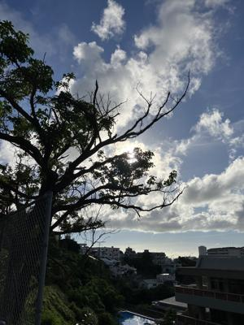
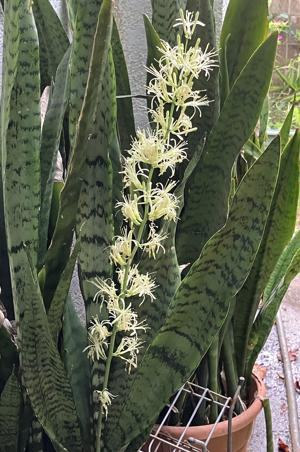

うるがいの話 ある日
最新: 『DELL XPS 8950 プラウザが立ち上がらない』【うるがいの話 ある日】とは 一日だけのプログです
『うるがいの話』の最新一日だけのプログで、通信料が少なく経済的だ。カニの画像をクリックすると全ての日付が載る『うるがいの話』サイトを表示します
|
|
【うるがいの話】 うるがい(ｳﾙｶﾞｲ urugai)とは、『もずくがに』の名前でとても大きくなります。 |
|---|---|
|
|
【カミマヤーの話】 猫のことを方言でマヤーといいます。カミマヤー（kamimayaa）とは、神の猫のことです。 |
|
【たながぁの音楽】 たながぁ（ﾀﾅｶﾞｰ tanagaa）とは手長えびのことで、何種類かあり大きいのは車 エビぐらいになります。 |

|
【ぶながぁの話】 ぶながぁ(ﾌﾞﾅｶﾞｰ bunagaa)とは、赤い髪の毛、赤い身体、そして身長は１ｍ２０ｃｍ ぐらい、川の蟹を食べているの目撃された。場所は沖縄県国頭郡大宜味村のと ある村僕の隣近所に住んでいる爺さんから、聞いた話です。 |
|
|
【ギーマの話】 ギーマ(giima)とは、山原の里山に咲くスズランに似た、 花を付けます。実は食べられます、 気が付くと口の周りが紫になっています。 |
2024年07月03日 (水）『DELL XPS 8950 プラウザが立ち上がらない』
15:48

ウーン、なんなんだ！、高性能ＰＣ３のパソコンのプラウザが立ち上がらな
い（応答が遅すぎて）。昨日、動画レコーダーソフトをグレードアップした
から？、タスクマネージャーをみると、見慣れない『Ｋｉｌｌｅｒ Ｐｅｒ
ｆｏｒｍａｎｃｅ Ｄｒｉｖｅｒ Ｓｕｉｔｅ』のアプリが動いている。
フムフム、そしてこのアプリをもとにネットを調べ、対応を取る。
Killer Performance Driver Suiteをアンインストール（アプリと機能）
併せて他の「Killer」系サービスである
・Killer Smart AP Selection Service
・Killer Network Service
・Killer Analytics Service
・Killer Dynamic Bandwidth Management
上記4サービスも「無効」に変更。その後、PCを再起動。
朝の８時前から、コソコソ対応をし終えたのは８時４０分、会議を設定しな
くて良かった。それにしても、こんな不具合、その筋の人じゃなかったらデ
ルに電話するのだろうか？。プログに書いたのは、のちのち検索で引っかか
るようにと。

コドモが、９時１０分ごろに朝飯を食べにくるというので、泊魚市で買って
冷凍庫にいれておいたマグロの刺身を、６時前から自然解凍させる。予定ど
おり、９時１０分に家に着き、刺身を美味しいと食べた。この前、県立病院
でお義母さんが、何度も刺身が食べたいと反復していたのを思いだす。
近所の学校の運動場から生徒の声が、昼間はほとんどしない。熱中症警戒ア
ラート発表中だからだろうが、この調子ではアラートが無くなるのはいつだ
ろう。保険の外交員から、年一の契約確認したいとラインからメールがあっ
た
１５時４０分 ビットコインの総資産 ￥２８、６４９（↓９０３）